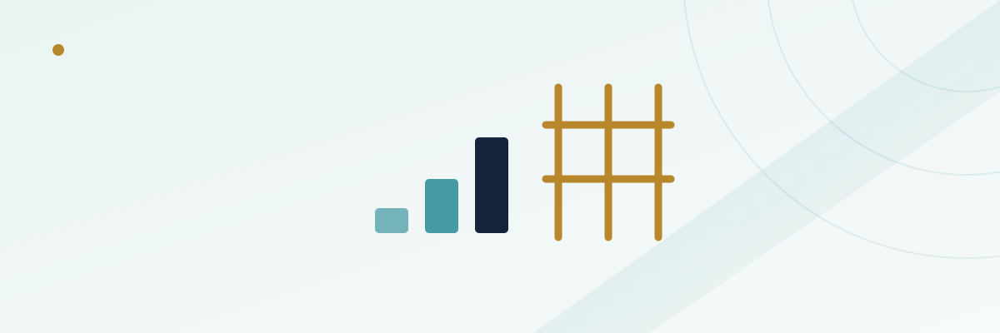

Chasing Losses in Sports Betting: How to Build Guardrails

Every bettor loses sometimes — that's built into the math of sportsbooks and nobody avoids it entirely. What separates a normal losing night from a damaging one is usually what happens in the ten minutes after the loss, not the loss itself. Chasing is the specific pattern where a loss changes the size or shape of the very next bet, and it's one of the most common and most fixable mistakes in sports betting once you can actually see it happening.
In this guide
What chasing losses actually looks like, bet to bet
Chasing isn't a single dramatic decision — it's usually a small, almost reasonable-sounding adjustment made in the moment. A bettor who planned to risk $25 a game loses the first two and bumps the third to $50 "to get back to even faster." Someone who sticks to straight bets all season suddenly builds a six-leg same-game parlay on a Sunday they're down $200, because a parlay's long odds feel like the only path back to zero in one shot. Neither decision was planned before the session started; both were produced by the session itself. That's the tell. A bet sized by your bankroll plan looks the same whether you're up or down. A bet sized by your current deficit is a chased bet.
Why a loss makes the next bet feel more urgent
This isn't a willpower failure so much as a predictable feature of how people weigh losses against gains. Behavioral research on loss aversion has found, repeatedly, that a loss of a given size registers more intensely than a gain of the same size — roughly twice as intensely in some classic experiments. Practically, that means a $100 loss doesn't just subtract $100 of satisfaction; it creates a disproportionate pull to undo it, and "undoing it" mentally gets anchored to the exact dollar figure already lost rather than to whatever your actual betting plan called for next. Add the sunk cost fallacy — the sense that money already lost is somehow still "in play" and recoverable through the next bet rather than gone — and you get a mental shortcut that pushes toward bigger, more aggressive next bets precisely when the evidence (a losing streak) suggests the opposite might be wiser.
Three common chasing patterns
Chasing doesn't always look like obviously reckless behavior from the outside, which is part of why it's easy to miss in your own session. Three shapes come up constantly:
Bigger stakes, same bets
Each loss nudges the next stake up — $25, then $40, then $75 — without any new information about the games themselves justifying the increase.
One big swing to erase the night
Instead of raising single-game stakes, the bettor builds a long-odds parlay or a single large wager designed to erase the entire night's deficit in one result.
Re-betting the same team or market
A bettor keeps betting the same team, player, or market type that cost them money earlier, reasoning it's now "due," rather than evaluating each new game independently.
The math problem: why doubling up doesn't just restore your risk
The intuitive plan — double the next bet to win back the last loss plus a little — has a math problem that compounds the longer a losing streak runs. Say a bettor starts with $50 bets at roughly -110 odds (a typical spread or total price) and doubles the stake after every loss, trying to recover with the next win:
| Bet | Stake | Running total risked | Needed just to break even if this one wins |
|---|---|---|---|
| 1 | $50 | $50 | Win pushes to +$45 profit |
| 2 (after loss) | $100 | $150 | Win only gets back to -$5 |
| 3 (after loss) | $200 | $350 | Win only gets back to -$5 |
| 4 (after loss) | $400 | $750 | Win only gets back to -$5 |
Notice that even a win at any stage after the first loss doesn't actually make the bettor whole — the vig baked into -110 pricing means every win recovers slightly less than 100% of what's been risked, so a true "doubling" strategy needs to overshoot the prior loss just to offset the house's cut. And because each stake is now a much larger share of a typical bankroll, four straight losses — not a rare outcome against anything close to a coin-flip price — turns an original $50 risk into a $750 hole. The math doesn't reward chasing for being aggressive; it punishes the bettor faster the longer a streak runs, which is exactly the opposite of what the "double up" instinct promises.
Guardrails that actually work
The fixes that hold up aren't about willpower in the moment — they're about taking the in-the-moment decision out of your hands before the moment arrives.
- Pre-commit to flat or unit-based staking. Decide your bet size as a fixed dollar amount or a fixed percentage of your bankroll before the week starts, and don't let a result change it mid-session. See our bankroll management guide for how to size units in the first place.
- Set a session loss limit and actually stop at it. Picking a number — say, three units — and treating it as a hard stop for the day removes the exact decision point where chasing starts.
- Use a cooling-off rule before re-betting after a loss. Even a short rule, like waiting until the next scheduled game slate rather than firing off an immediate next bet, breaks the direct loss-to-bet pipeline that chasing depends on.
- Set deposit limits with your sportsbook, not just a mental budget. Most licensed US operators let you cap deposits over a day, week, or month in account settings — a limit the platform enforces is harder to talk yourself out of than one that only exists in your head.
- Separate your betting funds from money you can freely top up. If a losing session can't be immediately refueled by moving more money in, there's a built-in pause between the urge and the ability to act on it.
When it's more than a bad night
Occasional chasing after a frustrating loss is common and usually self-correctable once you can name the pattern. It's worth taking more seriously if it's becoming the default rather than the exception: betting amounts climbing session over session with no plan behind the increase, borrowing money specifically to keep betting, hiding the scale of your activity from people close to you, or feeling unable to stop even after you've consciously decided to. None of those are moral failures, but they are signs worth acting on rather than waiting out. Our responsible gambling resources page has tools and contacts, including 1-800-GAMBLER, that are built for exactly this.
Frequently asked questions
Is chasing losses the same thing as having a gambling problem?
Not necessarily. Most bettors chase a loss occasionally without it reflecting a broader problem. It becomes more concerning when it's a consistent pattern rather than an occasional lapse, or when it starts affecting money you can't afford to risk.
Does a loss limit actually stop chasing, or just delay it?
A limit removes the specific moment where chasing starts — the decision to bet more right after a loss — by making that decision automatically unavailable rather than something you have to resist in real time. It's a structural fix, not a willpower fix, which is why it tends to hold up better.
Is it still chasing if I raise my bet size after a win, not a loss?
That's a different pattern (sometimes called pressing), with its own risks, but it isn't loss-chasing specifically. Chasing is defined by the loss-to-bigger-bet link; raising stakes after a win is a separate habit worth its own scrutiny, just not the one this guide addresses.
Why does a parlay feel like a good way to chase a loss when the odds are so much longer?
A parlay's long payout feels like it matches the size of the hole you're trying to climb out of in one move, which is emotionally appealing after a bad night. Mathematically it's the opposite of a good recovery tool — correlated risk and a much lower win probability make it one of the least reliable ways to get back to even, not the fastest.